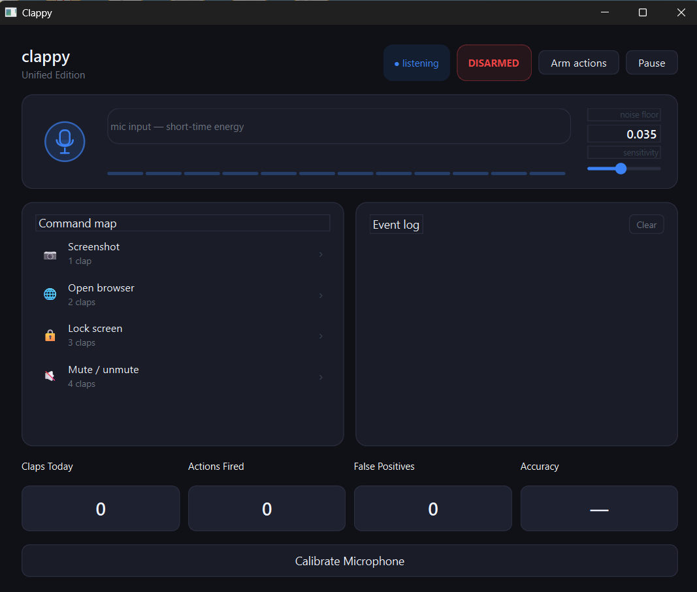

Explore the GUI and clap patterns
See how Clappy’s live audio dashboard, event log, and command map work together to turn claps into real desktop actions.
Click hereClappy is a single-file Python application that combines a terminal mode and a modern PyQt6 GUI. It listens to the microphone, detects sharp clap transients using adaptive RMS and peak thresholds, and maps clap patterns to desktop commands.
The application supports a unified command map: 1 clap captures a screenshot, 2 claps open a configured URL in the browser, 3 claps lock the screen, and 4 claps toggle system mute. A 5-clap gesture arms or disarms live actions, and the GUI provides noise-floor calibration, sensitivity controls, real-time waveform bars, event logging, and status badges.
Safe mode blocks destructive OS actions by default, while the GUI can optionally override safety for live interaction. Clappy also includes setup checks, microphone verification, and desktop-aware screenshot saving that works across normal and OneDrive-based Windows profiles.

See how Clappy’s live audio dashboard, event log, and command map work together to turn claps into real desktop actions.
Click here
Learn how to start Clappy in GUI mode, terminal mode, or setup-check mode with Python 3.8+ and the required dependencies.
Click here